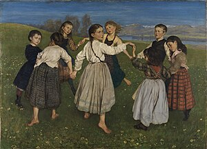

Definición
La danza o el baile es un arte donde se utiliza el movimiento del cuerpo, normalmente con música, como una forma de expresión y de interacción social con fines de entretenimiento y artísticos.

Es el movimiento estático y en desplazamiento que sucede en el espacio y el tiempo que se realiza con una parte y todo el cuerpo del ejecutante, con cierto compás o ritmo como expresión de sentimientos individuales o de símbolos de la cultura y la sociedad. La danza también es una forma de comunicación. Se usa el lenguaje no verbal entre los seres humanos donde el bailarín o bailarina expresa sentimientos y emociones a través de gestos y movimientos. Se realiza mayormente con música, ya sea una canción, pieza musical o tonos.
Los primeros en reconocer la danza como un arte fueron los griegos, que le dedicaron en su mitología una musa: Terpsícore. Su práctica estaba ligada al culto del dios Dioniso y, junto con la poesía y la música, era elemento indispensable de la tragedia griega, donde la catarsis ponía al individuo en relación con los dioses; aunque también entre los griegos cumplía la danza una función de comunicación y cohesión social.
Dentro de la danza existe la coreografía, que es el arte de crear danzas. A la persona que crea coreografías se le conoce como coreógrafo. La danza se puede bailar con un número variado de bailarines, que va desde solitario, en pareja o grupos; pero el número por lo general dependerá de la danza que se ejecutará y también de su objetivo, y en algunos casos más estructurados, de la idea del coreógrafo.